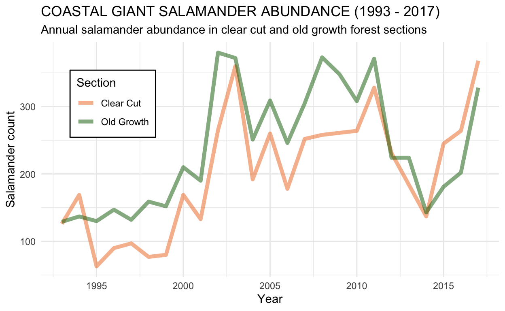
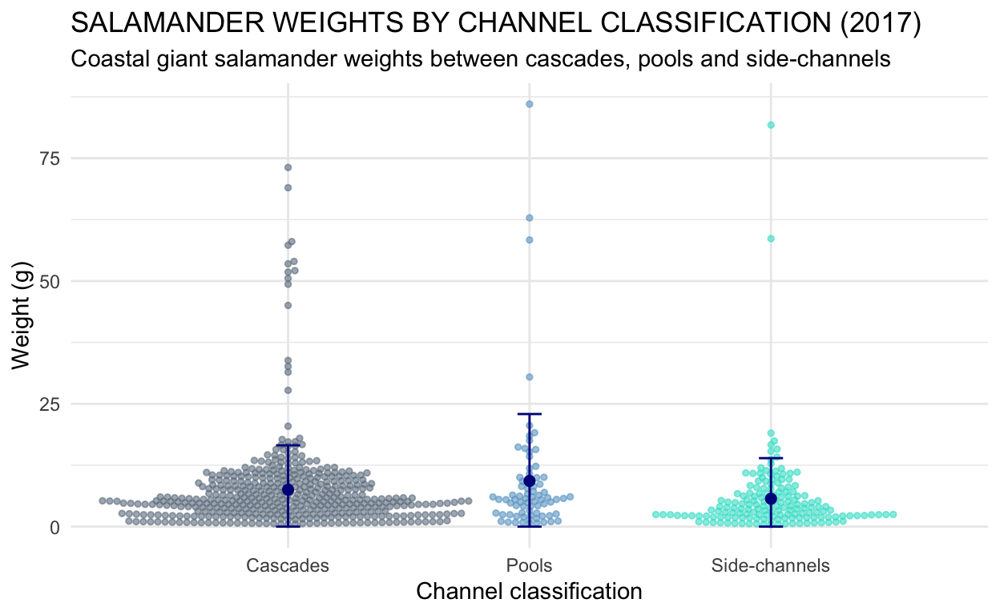

This project was completed in the fall of 2019.
Code
### Attach packages
library(tidyverse)
library(here)
library(janitor)
library(tidyr)
library(ggridges)
library(directlabels)
library(effsize)
library(kableExtra)
library(ggbeeswarm)
library(car)
### Read in data and make it tidy
salamanders <- read_csv("mack_creek_vertebrates.csv") %>%
clean_names() %>%
filter(species == "DITE")
# Data for Results A
salamanders_count <- salamanders %>%
count(section, year)%>%
mutate(section = replace(section, section == "CC", "Clear Cut")) %>%
mutate(section = replace(section, section == "OG", "Old Growth"))%>%
rename(Section = section)
# Data for Results B & C
salamanders_channels <- salamanders %>%
filter(year == "2017") %>%
filter(unittype != "IP") %>%
count(section, unittype) %>%
mutate(section = replace(section, section == "CC", "Clear Cut")) %>%
mutate(section = replace(section, section == "OG", "Old Growth")) %>%
mutate(unittype = replace(unittype, unittype == "C", "Cascade")) %>%
mutate(unittype = replace(unittype, unittype == "P", "Pool")) %>%
mutate(unittype = replace(unittype, unittype == "SC", "Side-Channel"))
# Data for Results D
s_weight_section <- salamanders %>%
filter(year == "2017") %>%
select(section, weight)
# Data for Results E
s_weight_type <- salamanders %>%
filter(year == "2017") %>%
filter(unittype != "IP") %>%
select(unittype, weight)
Introduction
Salamander and trout populations in the H.J. Andrews Experimental Forest have been monitored for over 20 years in an effort to record long-term population trends related to land use. Pacific giant salamanders (genus Dicamptodon) are endemic to the Pacific Northwest and include four distinct species, three of which were differentiated from each other in 1989 (Good, 1989). One of the species, Coastal giant salamanders (Dicamptodon tenebrosus), was monitored at Mack Creek in Andrews Experimental Forest in Oregon from 1993 to 2017. This analysis examines abundance and weights of salamanders for different sections (clear cut and old growth forests) and types of habitat (pools, cascades, and side-channels). Land use and disturbance affect wildlife in different ways, and research is ongoing in these areas to help understand how species will respond to environmental changes. The data analyzed in this report attempts to determine if significant associations exist between salamander abundance, weight, and forest sections in these research zones.

Data and Methods
Researchers from the Andrews Forest LTER site have collected data from 1993 - 2017 on the abundance, length, weight and habitat dimensions of coastal giant salamanders (Dicamptodon tenebrosus) at two sites in the H.J. Andrews Experimental Forest; one of the sites was a section that was clear cut in 1963 and the other site was a 500 year old coniferous forest located further upstream. Researchers collected data annually at the same 150 meter reaches of stream using 2-pass electrofishing.

The effects of section type (clear cut or old growth) on the abundance of salamanders in different channel classifications was tested using a Chi-square test. The weights of salamanders found in the two forest sections were compared using two-sided, two sample t-tests with a 95% confidence interval and Cohens d.Salamander weights by channel classification were analyzed using a one-way ANOVA test and post-hoc Tukeys HSD. All analyses and figures were prepared using R software version 3.6.1.
Results
1. Annual salamander abundance in clear cut and old growth forest sections
The number of coastal giant salamanders in clear cut and old growth forests were recorded each year at Mack Creek between 1993 and 2017 (Figure 1). In both sections of forest, salamander abundance increased during this time period. The number of salamanders found in the clear cut section increased from 126 in 1993 to 368 by 2017 (192% increase). The number of salamanders found in the old growth section increased from 129 to 328 (154% increase). The two sections generally follow the same trends, with similar dips and peaks. Until 2014, most years had higher salamander abundance in old growth forest sections than in clear-cut sections.
Code
## Results A Data Exploration
# ggplot(salamanders_count, aes(x = year, y = n)) +
# geom_bar(stat = "identity")+
# facet_wrap(~Section)
# ggplot(data = salamanders_count, aes(sample = n))+
# geom_qq(aes(color = section),
# alpha = 0.5,
# show.legend = FALSE)+
# facet_wrap(~section)
# ggplot(data = salamanders_count, aes(y = Section, x = year))+
# geom_density_ridges(aes(color = Section,
# fill = Section),
# alpha = 0.5)
color_group <-c("chocolate2", "darkgreen")
ggplot(data = salamanders_count, aes(y = n, x = year))+
geom_line(aes(color = Section),
alpha = 0.5,
size = 1.7) +
theme_minimal() +
scale_x_continuous(breaks = c(1990, 1995, 2000, 2005, 2010, 2015)) +
scale_y_continuous(breaks = c(100, 200, 300, 400)) +
ggtitle("COASTAL GIANT SALAMANDER ABUNDANCE (1993 - 2017)",
subtitle = "Annual salamander abundance in clear cut and old growth forest sections") +
labs(x = "Year",
y = "Salamander count",
color = "Section") +
theme(
legend.position = c(0.25, .88),
legend.justification = c("right", "top"),
legend.box.just = "right",
legend.margin = margin(6, 6, 6, 6),
legend.background = element_rect("white")) +
scale_color_manual(values = color_group)

Figure 1. Changes in annual coastal giant salamander abundance (counts) in sections of clear cut forest (orange) and sections of old growth forest (green) from 1993 to 2017. Total salamander counts in 1993: clear cut(n) = 126, old growth(n) = 129. Total salamander counts in 2017: clear cut(n) = 368, old growth(n) = 328.
2. Abundance of salamander in each section by channel classifications
Based on the observations recorded in 2017, the proportions of coastal giant salamanders found in different channel classifications (cascade, pool, or side-channel) were calculated within both the clear cut and old growth sections of Mack Creek (Table 1). Notably, the proportions of salamanders found in the different channel classifications were similar across both sections. In both clear cut and old growth forest conditions, the proportion of salamander counts was highest in cascades, lowest in pools, and were almost equal in side-channels, comprising 24% and 23% respectively.
Table 1. Abundance (counts) and proportions of salamanders found in different channel classifications within clear cut and old growth sections of Mack Creek in 2017. The different channel classifications include cascade, pool, and side-channel.
Code
### Results B
## Create a table with wide fromat:
s_channel_table <- salamanders_channels %>%
pivot_wider(names_from = unittype, values_from = n)
## Results B Create a nice looking table with proportions included
s_table_props <- s_channel_table %>%
adorn_percentages(denominator = "row") %>%
adorn_pct_formatting(digits = 0) %>%
adorn_ns(position = "front") %>%
rename(Section = section)
s_table_styled <- kable(s_table_props) %>%
kable_styling(bootstrap_options = "striped",
full_width = F,
position = "left") %>%
add_header_above(c("Salamander abundance in different channel classifications" = 4))
s_table_styled
| Section | Cascade | Pool | Side-Channel |
|---|---|---|---|
| Clear Cut | 247 (67%) | 31 (8%) | 90 (24%) |
| Old Growth | 201 (63%) | 45 (14%) | 74 (23%) |
3. Effects of forest conditions on salamander locations
Code
### Results C
## Results C Data Exploration
# ggplot(salamanders_channels, aes(x = unittype, y = n)) +
# geom_bar(stat = "identity")+
# facet_wrap(~section)
## Results C Statistical Test
# Regarding the locations where salamanders were observed in Mack Creek in 2017, is there a significant effect of forest condition on where the channel salamanders are found?
chi_counts <- s_channel_table %>%
select(-section)
# chi_counts
s_chi_counts <- chisq.test(chi_counts)
# s_chi_counts
For both forest conditions, abundance and proportions of salamanders found in each channel classification were compared (Table 1). In pools, a smaller proportion of salamanders were observed in the clear cut section compared to the old growth (8%, n = 31 and 14%, n = 45). Cascades had a similar proportion between the two sections (67%, n = 247 and 63%, n = 201) and side-channels were almost equal (24%, n = 90 and 23%, n = 74). While the abundance of salamanders observed in pools slightly different between the two sections, the overeall proportions were fairly similar across both forest sections. A Pearsons Chi-square test was used to determine that forest condition does not have an effect on where salamanders are located within the channel (p = 0.063), thus there is no clear association between forest section type and salamander location.
4. Salamander weights in clear cut and old growth forest sections in 2017
Code
# Results D
## Results D Data Exploration
# ggplot(s_weight_section, aes(x = weight, y = section)) +
# geom_jitter()
salamanders_summary_weight <- salamanders %>%
group_by(section) %>%
filter(year == "2017") %>%
summarize(
mean_weight = mean(weight, na.rm = TRUE),
sd_weight = sd(weight, na.rm = TRUE),
se_weight = sd(weight, na.rm = TRUE) / sqrt(n()),
var_weight = var(weight, na.rm = TRUE)
)
## Make vectors for statistical tests
cc_weight <- s_weight_section %>%
filter(section == "CC") %>%
pull(weight)
og_weight <- s_weight_section %>%
filter(section == "OG") %>%
pull(weight)
cc_mean_weight <- mean(cc_weight)
og_mean_weight <- mean(og_weight, na.rm = TRUE)
# Run two samplee, two-sided ttest
weight_ttest <- t.test(cc_weight,og_weight)
# weight_ttest
# Let's also run Cohen's d for effect size
weight_d <- effsize::cohen.d(cc_weight,og_weight, na.rm =TRUE)
# weight_d
Salamander weights (grams) were compared between clear cut and old growth forest sections in 2017. The mean weight of salamanders found in clear cut sections was slightly heavier (7.78 g) compared to salamanders found in old growth sections (6.58 g). This difference in mean weights of 1.2 g was found to be insignificant using a two-sample t-test (t(692.79) = 1.67, p = 0.096) with a negligible effect size (Cohens d = 0.13). Salamander weights do not differ significantly based on forest condition.
5. Salamander weights in three channel classifications in 2017
Code
### Results E
## Results E Summary Statisitics
salamanders_summary_type <- salamanders %>%
group_by(unittype) %>%
filter(unittype %in% c("C", "P", "SC")) %>%
filter(year == "2017") %>%
summarize(
mean_weight = mean(weight, na.rm = TRUE),
sd_weight = sd(weight, na.rm = TRUE),
se_weight = sd(weight, na.rm = TRUE) / sqrt(n()),
var_weight = var(weight, na.rm = TRUE)
)
## Statistical test
# Exploratory Levene's test to explore variances
# leveneTest(weight ~ unittype, data = s_weight_type) # P-value is not below 0.05 so we retain the null hypothesis of equal variances
# ANOVA - comparing mean weights between three groups and potential poc-hoc tests depdending on results
weight_ANOVA <- aov(weight ~ unittype, data = s_weight_type)
# weight_ANOVA
aov_outputs <- unlist(summary(weight_ANOVA))
# Null hpothesis - the meaens are equal across all three groups. Altenative - means are not equal across all groups (at least two differ or all differ).
# P value is less than 0.05 so we will do post-hoc testings to detrmine which ones differ significantly.
weight_tukey <- TukeyHSD(weight_ANOVA)
# Null phyothesis for every pairwise test: there is no significant difference in menas for that that pairwise combination. The only one that differed significantly from each other at %5 significance level is SC-P.
Mean weights for salamanders in 2017 were compared between the three channel classifications, regardless of forest section (clear cut or old growth). Salamanders found in pools had the largest mean weight (9.30 grams), salamanders found in side-channels had the smallest (5.68 grams) and the mean weight of salamanders found in cascades was in between the two (7.52 grams). Using a one-way ANOVA test, it was determined that at least two of the mean weights were significantly different (F(2, 684) = 4.22, p = 0.015). To determine which channel classifications differed in mean weights, a post-hoc Tukeys HSD test was conducted. The results from this indicated that mean weights differed significantly between side-channels and pools, but there was no significant difference in mean weights between pools and cascades or between side-channels and cascades (p = 0.286 between pools and cascades; p = 0.084 between side-channels and cascades; p = 0.017 between side-channels and pools). Overall, the main difference in mean salamander weights based on channel classification was between side-channels and pools, which was 3.62 grams.
Code
## Results E Data Visualization
ggplot()+
geom_beeswarm(data = s_weight_type,aes(x = unittype, y = weight, color = unittype),
size = 1,
alpha = 0.6) +
scale_color_manual(values = c("slategrey", "skyblue3","turquoise"))+
scale_x_discrete(labels = c("Cascades", "Pools", "Side-channels"), expand = c(.45,0)) +
geom_errorbar(data = salamanders_summary_type,
aes(x = unittype,
ymin = 0,
ymax = mean_weight + sd_weight),
color = "darkblue",
width = 0.1) +
geom_point(data = salamanders_summary_type, aes(x = unittype, y = mean_weight),
color = "darkblue",
size = 2) +
labs(x = "Channel classification",
y = "Weight (g)")+
ggtitle("SALAMANDER WEIGHTS BY CHANNEL CLASSIFICATION (2017)",
subtitle = "Coastal giant salamander weights between cascades, pools and side-channels") +
theme_minimal()+
theme(legend.position = "none")

Figure 2. Coastal giant salamander weights (grams) by channel classification in 2017. The dark blue points in each channel classification indicate the mean weight, and the error bars include one standard deviation on either end of the mean, truncated at zero since salamander weight can not be less than zero.
If this analysis were to move forward, it would be advisable to compare other metrics rather than just means between groups. Means are affected by outliers, and, as seen in Figure 2, all groups had a few outliers with high weights. It could be helpful to conduct a rank-based test in addition to comparing means between groups.
Summary
- Salamander abundance increased in both clear cut and old growth forest sections between 1993 and 2017
- The location of salamanders in different channel classifications (cascades, pools, and side-channels) in 2017 was not associated with forest condition (clear cut or old growth)
- The weights of salamanders in both forest conditions were similar in 2017
- The weights of salamanders found in side-channels and pools were significantly different in 2017
- Overall, in terms of abundance and weights, the salamanders in the research zones were not significantly affected by forest disturbance
References
Heaston, Emily & Kaylor, Matt & Warren, Dana. (2017). Characterizing short-term light dynamics in forested headwater streams. Freshwater Science. 36. 000-000. 10.1086/691540.
Good, David A. (1989). HYBRIDIZATION AND CRYPTIC SPECIES IN DICAMPTODON (CAUDATA: DICAMPTODONTIDAE). Evolution; International Journal of Organic Evolution, vol.43, no. 4, pp.72844. PubMed, doi:10.1111/j.1558-5646.1989.tb05172.x.
Gregory S. V. 2016. Aquatic Vertebrate Population Study in Mack Creek, Andrews Experimental Forest, 1987 to present. Environmental Data Initiative. https://doi.org/10.6073/pasta/5de64af9c11579266ef20da2ff32f702. Dataset accessed 11/27/2019.